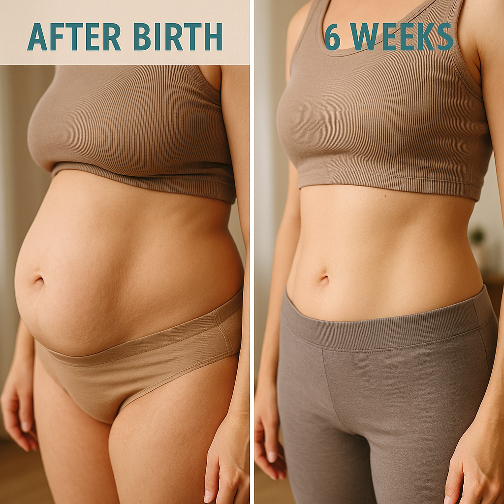
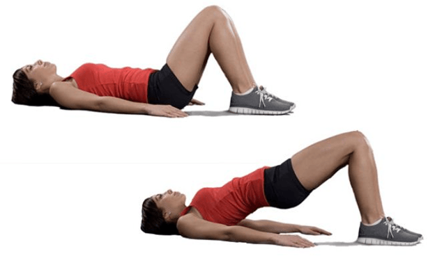
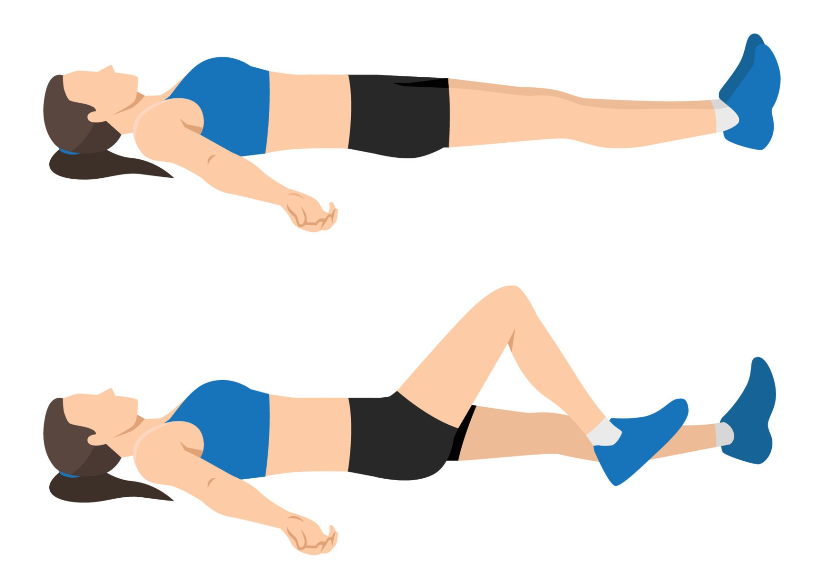
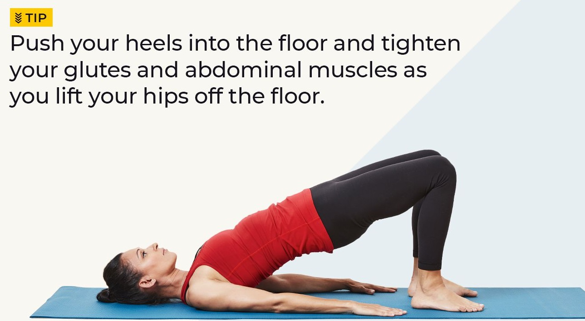
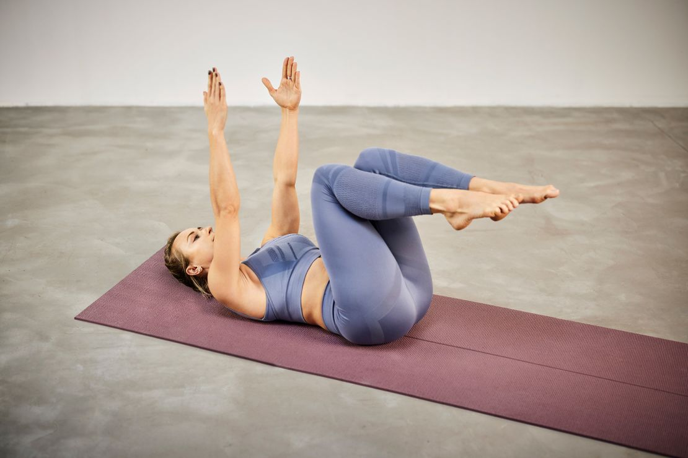
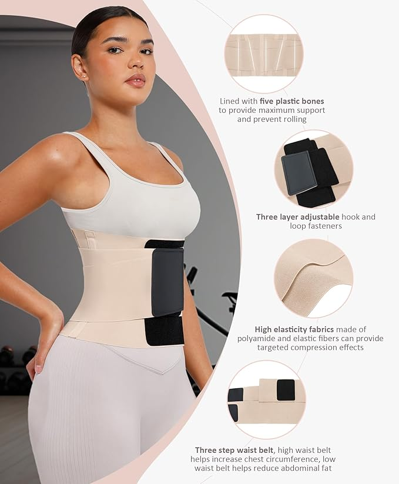

Why Do Most Women Struggle with a Mummy Tummy After Birth?

After childbirth, many women experience what's commonly known as a "mummy tummy." This isn’t just leftover weight—it often involves physical and hormonal changes that can be tough to reverse without the right knowledge.
🔍 What is a Mummy Tummy?
A "mummy tummy" refers to the soft, bulging belly some women retain after giving birth. It often results from diastasis recti—a separation of abdominal muscles—and weakened core and pelvic floor muscles.
Did You Know?
Over 60% of postpartum women experience abdominal separation within 6 weeks of delivery.
🤱 Why It Happens
- Muscle Separation: The growing uterus stretches the abdominal muscles.
- Hormonal Changes: Estrogen and progesterone affect fat storage.
- Pelvic Floor Weakness: Pregnancy impacts the stability of core muscles.
- Postural Changes: Carrying a baby shifts your center of gravity.
- Lack of Recovery Time: New moms often skip self-care.
🛠️ How to Fix It: Safe Steps Toward Healing
- Gentle Core Exercises: Start with deep breathing and pelvic tilts.
Start slow and consistent. These gentle movements focus on healing the core.
- Pelvic Tilts: Lie on your back, tilt your pelvis up. Do 3 sets of 10 reps.

- Heel Slides: Strengthen lower abs without pressure.

- Bridge Pose: Tighten your glutes and lower abs.

- Dead Bug: Great for coordination andi core strength.

- Use Postpartum Support Belts: These help stabilize abdominal muscles.

- Hydrate and Eat Whole Foods: Focus on anti-inflammatory foods.
- Leafy Greens — spinach, kale
- Healthy Proteins — lentils, eggs, chicken
- Good Fats — avocado, olive oil, nuts
- Complex Carbs — oats, brown rice, quinoa
- Avoid Crunches Early On: They can worsen muscle separation.
- Stay Consistent: Healing takes weeks, not days!
🎯 Top Product Pick: Postpartum Belly Band
This Amazon best-seller helps women support their abdominal wall and recover faster.
🛒 View Belly Band on Amazon
💡 Final Thoughts
Remember, you're not alone. A mummy tummy is a **natural** part of the postpartum journey. With consistency, care, and patience, your body can recover and feel stronger than ever!
📌 Related Reads: